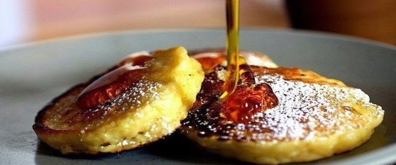

Яблочные блинчики

В миске смешать яйцо с 4 ст.л. сахара, влить 250 мл. кефира, всыпать 0,5 ч.л. соды, 8 ст.л. с горкой муки, 0,5 ч.л. корицы, 2 ст.л. подсолнечного масла. Натереть на крупной терке 3-4 яблока, вмешать в тесто. Обжаривать на сковороде с маслом.
Подавать с кленовым сиропом.